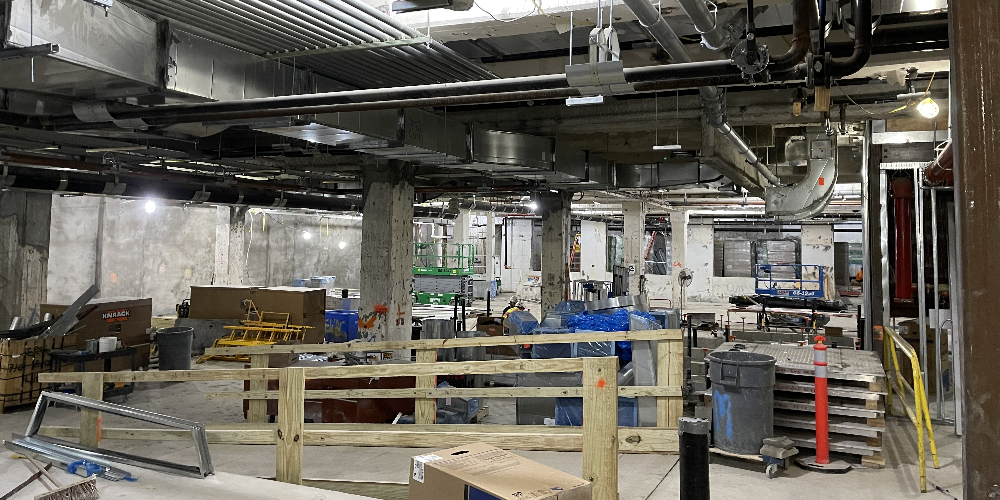

Experiences - Jaros, Baum & Bolles
June 2022 - August 2022 | New York, New York
Last summer (2022), I spent 10 weeks interning at Jaros, Baum & Bolles’ NYC office. It was my first professional internship and I’m very grateful for having one after my freshman year in college. Huge thank you to Walter Mehl for helping me land an interview at JB&B (he’s also a Cooper alumnus).
Firstly, JB&B has a great company culture. For how small of a company they are (~400 employees in NYC) they operate like they have tons of extra resources for developing new future talent in their college interns. Although I don’t necessarily see myself pursuing a career in MEP or living in NYC after college, if however I did, I would definitely choose to work at JB&B.
By the end of the 10 weeks, I ended up helping in the design (with limited supervision) of 5 Tenant fit-out projects using Autodesk Revit. Specifically, the project buildings I worked on were 540 Madison, One Bryant Park, One World Trade Center, Hallet Towers, and NYU’s Skirball Center.
The process for designing commercial/residential fit-outs was unique to each building, some were for the construction of completely new buildings and some were just renovations of old existing buildings. I alos led several design tasks myself, this included branch circuiting, ductwork distribution, piping distribution, latent and sensible heat load calculations, static air pressure calculations, equipment selection and sizing, and sustainability analysis. Finally, the process also included professional communication with the construction, civil, and architectural firms. In order to do this, I would review my shop drawings, construction documents, construction administration of RFIs & client submittals to ensure all of my designs were being communicated properly to the other consulting firms.
Getting away from the design process, my favorite part of the internship was definitely the site visits. I got to go on 3 of them actually. The most impressive was the brand new David Geffen Concert Hall at the Lincoln Center for the Performing Arts complex on Manhattan's Upper West Side. The site visits were fascinating as I had the opportunity to observe the fundamental structure of a building prior to the installation of its furnishings and finishing touches.
Some pictures from the site visits

Tyler Lista, my supervisor for the internship, was the greatest mentor I could have asked for. He put so much of his time into teaching me and making sure I walked away from that internship with tons of industry knowledge and a firm grasp in HVAC. Supervisors like him that go above and beyond in taking the time to teach new hires are what make the difference in what constitutes a great internship. I'm still in contact with him to this day and we frequently email and meet for coffee chats.
*A take away from this is to always ask as many questions as possible and to learn as much as possible at a job or internship. There is always someone who can teach you great things, it's on you to be curious and ask the great questions.